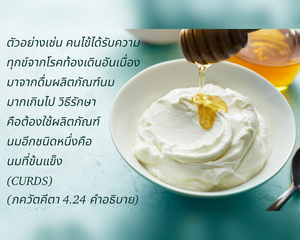
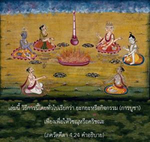

บุคคลผู้ซึมซาบอยู่ในกฺฤษฺณจิตสำนึกอย่างสมบูรณ์แน่นอนว่าจะบรรลุถึงอาณาจักรทิพย์ เนื่องจากการให้ความช่วยเหลือของเขาในกิจกรรมทิพย์อย่างเต็มที่ ซึ่งจุดมุ่งหมายคือสัจธรรม และสิ่งที่ถวายก็เป็นธรรมชาติทิพย์เช่นเดียวกัน


กิจกรรมในกฺฤษฺณจิตสำนึกในที่สุดสามารถนำพาเราไปสู่จุดหมายทิพย์ได้อย่างไรนั้นได้อธิบายไว้ ณ ที่นี้ มีกิจกรรมมากมายในกฺฤษฺณจิตสำนึก ซึ่งทั้งหมดนั้นจะอธิบายในโศลกต่อๆ ไป แต่ในตอนนี้จะอธิบายเพียงหลักของกฺฤษฺณจิตสำนึกเท่านั้น พันธวิญญาณถูกพันธนาการอยู่ในมลทินทางวัตถุ จึงเป็นที่แน่นอนว่าพวกเขาจะต้องปฏิบัติกิจกรรมต่างๆ ที่อยู่ในบรรยากาศวัตถุ ถึงกระนั้นเขาก็ยังต้องการอิสรภาพจากสิ่งแวดล้อมนี้ วิธีการที่พันธวิญญาณสามารถออกจากบรรยากาศวัตถุได้ คือ กฺฤษฺณจิตสำนึก ตัวอย่างเช่น คนไข้ได้รับความทุกข์จากโรคท้องเดินอันเนื่องมาจากดื่มผลิตภัณฑ์นมมากเกินไป วิธีรักษา คือ ต้องใช้ผลิตภัณฑ์นมอีกชนิดหนึ่ง คือ นมที่เข็มข้น (curds) ในการรักษา พันธวิญญาณผู้ซึมซาบอยู่ในวัตถุสามารถรักษาได้ด้วยกฺฤษฺณจิตสำนึก ดังที่ได้วางหลักการไว้ในหนังสือ ภควัท-คีตา เล่มนี้ วิธีการนี้โดยทั่วไปเรียกว่า ยชฺญ หรือกิจกรรม (การบูชา) เพียงเพื่อให้องค์วิษฺณุ หรือองค์กฺฤษฺณทรงพอพระทัยเท่านั้น กิจกรรมในโลกวัตถุที่ทำถวายให้พระวิษฺณุ หรือในกฺฤษฺณจิตสำนึกด้วยการซึมซาบมากเพียงใด ก็จะเปลี่ยนบรรยากาศให้กลายมาเป็นทิพย์มากเพียงเท่านั้น คำว่า พฺรหฺม มีความหมายว่า “ทิพย์” องค์ภควานฺทรงเป็นทิพย์ และรัศมีจากพระวรกายทิพย์ของพระองค์เรียกว่า พฺรหฺม-โชฺยติรฺ รัศมีทิพย์ของพระองค์ ทุกสิ่งทุกอย่างที่มีอยู่สถิตใน พฺรหฺม-โชฺยติรฺ นั้น แต่เมื่อ โชฺยติรฺ นั้นถูกปกคลุมไปด้วยความหลงแห่ง มายา หรือการสนองประสาทสัมผัสจึงเรียกว่า วัตถุ ม่านแห่งวัตถุนี้สามารถถูกรูดออกไปได้ทันทีด้วยกฺฤษฺณจิตสำนึก ฉะนั้น การถวายเพื่อกฺฤษฺณจิตสำนึก กรรมวิธีในการถวาย ผู้ถวาย และผลทั้งหมดเมื่อรวมกัน คือ พฺรหฺมนฺ หรือสัจธรรมที่สมบูรณ์ สัจธรรมที่สมบูรณ์ถูกปกคลุมด้วย มายา เรียกว่า วัตถุ เมื่อวัตถุมาประสานกับสัจธรรมที่สมบูรณ์จะได้รับคุณสมบัติทิพย์ของตนเองกลับคืนมา กฺฤษฺณจิตสำนึกจึงเป็นวิธีเปลี่ยนสภาพจิตสำนึกที่หลงผิดมาเป็น พฺรหฺมนฺ หรือองค์ภควานฺ เมื่อจิตใจซึมซาบอยู่ในกฺฤษฺณจิตสำนึกอย่างสมบูรณ์ เรียกว่าอยู่ใน สมาธิ หรือสมาธิ ทุกสิ่งทุกอย่างที่ทำไปด้วยจิตสำนึกทิพย์เช่นนี้ เรียกว่า ยชฺญ หรือการบูชาเพื่อสัจธรรมที่สมบูรณ์ ในสภาวะจิตสำนึกทิพย์นี้ ผู้ช่วยเหลือสนับสนุน การช่วยเหลือสนับสนุน การบริโภค ผู้ปฏิบัติหรือผู้นำการปฏิบัติ และผลลัพธ์ หรือผลที่ได้รับสูงสุด คือ ทุกสิ่งทุกอย่างกลายเป็นหนึ่งในสัจธรรมที่สมบูรณ์ พฺรหฺมนฺ สูงสุด นั่นคือวิธีการของกฺฤษฺณจิตสำนึก